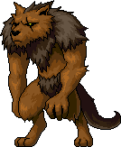

Lv. 75 · #7130200
웨어울프
설원의 계곡에서도 매우 깊은 곳에서 가끔 목격되는 거대한 늑대 형태의 몬스터이다. 사람처럼 두 발로 걸어 다니며 공격을 받으면 숨겨져 있던 날카로운 발톱으로 할퀴는 공격을 해온다. 인간이 늑대에 물리면 이 몬스터로 변해버린다는 소문이 있다.
스탯
레벨 75- HP
- 16.0K
- MP
- 150
- EXP
- 504
- 넉백 가능 데미지
- 1500+
- 물리 데미지
- 330
- 마법 데미지
- 380
- 물리 방어력
- 800
- 마법 방어력
- 290
- 속도
- -10
- 75레벨 에서의 필요 명중
- 91.65
- 메소
- 562.5
- 속성관계
- 미기재
- 체경비
- 31.75
- 형태
- 동물형
출현 지역
출현 맵 2개맵 이름을 누르면 메이플노트의 맵 정보가 열립니다.
드롭 테이블
전체 37개| 아이템 | 아이템 ID | 드롭 확률 |
|---|---|---|
| 웨어울프의 발톱 | 4000053 | 60% |
| 마나 엘릭서 | 2000006 | 7% |
| 자수정의 원석 | 4020001 | 0.4% |
| 아다만티움의 원석 | 4010003 | 0.3% |
| 힘의 크리스탈 원석 | 4004000 | 0.2% |
| 마법의 돌 | 4006000 | 0.09% |
| 마법의 가루(파랑) | 4007002 | 0.03% |
| 마법의 가루(하얀색) | 4007001 | 0.03% |
| 단검 제작의 촉진제 | 4130014 | 0.01% |
| 폴암 제작의 촉진제 | 4130009 | 0.01% |
| 두손도끼 제작의 촉진제 | 4130006 | 0.01% |
| 브라운 레퀴엠 | 1050069 | 0.01% |
| 라이트 맨티스 바지 | 1061093 | 0.01% |
| 화이트 아나카문 | 1050055 | 0.01% |
| 라이트 맨티스 | 1041094 | 0.01% |
| 브론즈 플라틴 | 1040102 | 0.008% |
| 브론즈 플라틴 바지 | 1060090 | 0.008% |
| 다크 로린 | 1082100 | 0.008% |
| 핑크 루티드 | 1041102 | 0.008% |
| 핑크 루티드 바지 | 1061101 | 0.008% |
| 다크 키튼서클렛 | 1002254 | 0.008% |
| 그린 웨어캡 | 1002288 | 0.008% |
| 스틸 에이션트 실드 | 1092015 | 0.007% |
| 투구 민첩 주문서 10% | 2040031 | 0.007% |
| 완드 마력 주문서 60% | 2043701 | 0.006% |
| 아대 공격력 주문서 60% | 2044701 | 0.006% |
| 그린 피라티드 치마 | 1061104 | 0.006% |
| 그린 피라티드 | 1041105 | 0.006% |
| 레드 프리아 | 1051066 | 0.006% |
| 블루 드래곤 바부타 | 1002339 | 0.006% |
| 퍼플 크로스햇 | 1002273 | 0.006% |
| 모던스튬 | 1322020 | 0.006% |
| 흑갑충 | 1472029 | 0.006% |
| 그륜힐 | 1402012 | 0.006% |
| 칸디네 | 1332018 | 0.006% |
| 블랙 보이슨 슈즈 | 1072309 | 0.002% |
| 귀 장식 지력 주문서 10% | 2040302 | 0.002% |
조건에 맞는 드롭 아이템이 없습니다.
확률은 메이플노트에 게시된 값입니다. 아이템 이름을 누르면 원본 아이템 정보가 열립니다. 과거 버전 데이터이므로 실제 메이플랜드와 다를 수 있습니다.